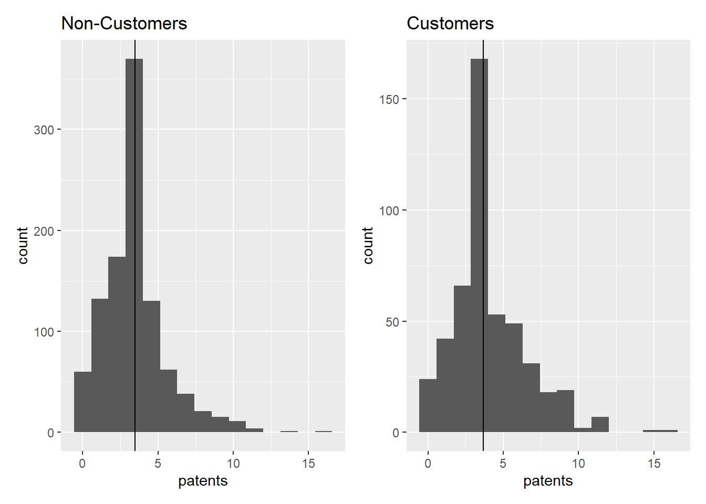
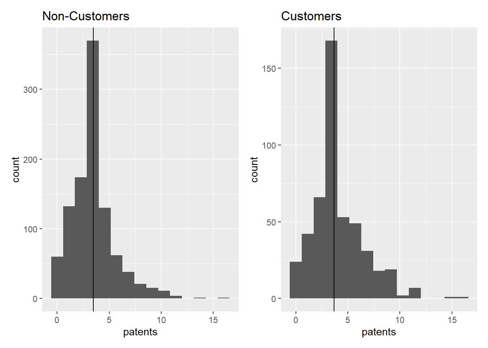
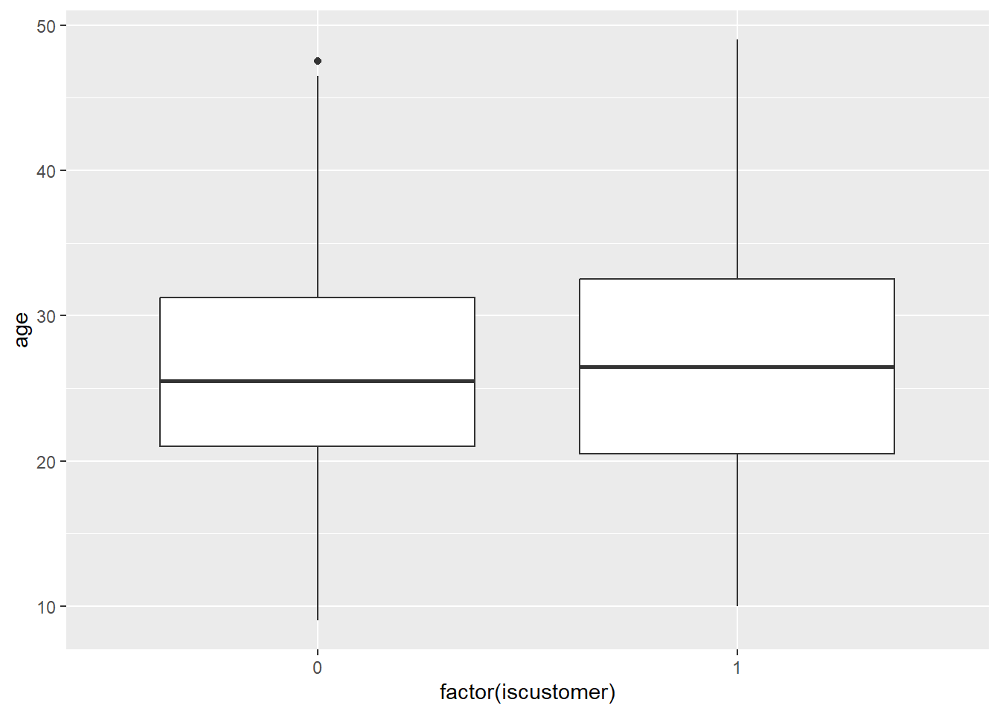
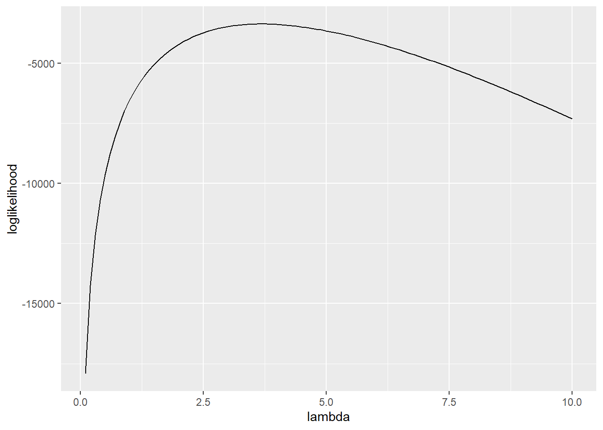

[1] "Non-Customer mean: 3.4730127576055"[1] "Customer mean: 4.13305613305613"
Wesley Covey
May 11, 2025
Blueprinty is a small firm that makes software for developing blueprints specifically for submitting patent applications to the US patent office. Their marketing team would like to make the claim that patent applicants using Blueprinty’s software are more successful in getting their patent applications approved. Ideal data to study such an effect might include the success rate of patent applications before using Blueprinty’s software and after using it. Unfortunately, such data is not available.
However, Blueprinty has collected data on 1,500 mature (non-startup) engineering firms. The data include each firm’s number of patents awarded over the last 5 years, regional location, age since incorporation, and whether or not the firm uses Blueprinty’s software. The marketing team would like to use this data to make the claim that firms using Blueprinty’s software are more successful in getting their patent applications approved.
[1] "Non-Customer mean: 3.4730127576055"[1] "Customer mean: 4.13305613305613"
The histograms of patent counts by customers vs non-customers reveal nearly identical distributions with a slightly higher mean value for customers of the firm.
Blueprinty customers are not selected at random. It may be important to account for systematic differences in the age and regional location of customers vs non-customers.

The company’s customers are disproportionately from the Northeast region, though not entirely. The distibution of age is, howver, much more even for customer vs non-customers.
Since our outcome variable of interest can only be small integer values per a set unit of time, we can use a Poisson density to model the number of patents awarded to each engineering firm over the last 5 years. We start by estimating a simple Poisson model via Maximum Likelihood.

Next, we extend our simple Poisson model to a Poisson Regression Model such that \(Y_i = \text{Poisson}(\lambda_i)\) where \(\lambda_i = \exp(X_i'\beta)\). The interpretation is that the success rate of patent awards is not constant across all firms (\(\lambda\)) but rather is a function of firm characteristics \(X_i\). Specifically, we will use the covariates age, age squared, region, and whether the firm is a customer of Blueprinty.
Estimate Std_Error
(Intercept) -0.125735914 0.1122180346
age 0.115793715 0.0063574229
age_sq -0.002228748 0.0000771291
regionNortheast -0.024556782 0.0433762879
regionNorthwest -0.034827790 0.0529311002
regionSouth -0.005441860 0.0524007440
regionSouthwest -0.037784109 0.0471722463
iscustomer 0.060665584 0.0320588299AirBnB is a popular platform for booking short-term rentals. In March 2017, students Annika Awad, Evan Lebo, and Anna Linden scraped of 40,000 Airbnb listings from New York City. The data include the following variables:
- `id` = unique ID number for each unit
- `last_scraped` = date when information scraped
- `host_since` = date when host first listed the unit on Airbnb
- `days` = `last_scraped` - `host_since` = number of days the unit has been listed
- `room_type` = Entire home/apt., Private room, or Shared room
- `bathrooms` = number of bathrooms
- `bedrooms` = number of bedrooms
- `price` = price per night (dollars)
- `number_of_reviews` = number of reviews for the unit on Airbnb
- `review_scores_cleanliness` = a cleanliness score from reviews (1-10)
- `review_scores_location` = a "quality of location" score from reviews (1-10)
- `review_scores_value` = a "quality of value" score from reviews (1-10)
- `instant_bookable` = "t" if instantly bookable, "f" if not X id days last_scraped
Min. : 1 Min. : 2515 Min. : 1 Length:40628
1st Qu.:10158 1st Qu.: 4889868 1st Qu.: 542 Class :character
Median :20315 Median : 9862878 Median : 996 Mode :character
Mean :20315 Mean : 9698889 Mean : 1102
3rd Qu.:30471 3rd Qu.:14667894 3rd Qu.: 1535
Max. :40628 Max. :18009669 Max. :42828
host_since room_type bathrooms bedrooms
Length:40628 Length:40628 Min. :0.000 Min. : 0.000
Class :character Class :character 1st Qu.:1.000 1st Qu.: 1.000
Mode :character Mode :character Median :1.000 Median : 1.000
Mean :1.125 Mean : 1.147
3rd Qu.:1.000 3rd Qu.: 1.000
Max. :8.000 Max. :10.000
NA's :160 NA's :76
price number_of_reviews review_scores_cleanliness
Min. : 10.0 Min. : 0.0 Min. : 2.000
1st Qu.: 70.0 1st Qu.: 1.0 1st Qu.: 9.000
Median : 100.0 Median : 4.0 Median :10.000
Mean : 144.8 Mean : 15.9 Mean : 9.198
3rd Qu.: 170.0 3rd Qu.: 17.0 3rd Qu.:10.000
Max. :10000.0 Max. :421.0 Max. :10.000
NA's :10195
review_scores_location review_scores_value instant_bookable
Min. : 2.000 Min. : 2.000 Length:40628
1st Qu.: 9.000 1st Qu.: 9.000 Class :character
Median :10.000 Median :10.000 Mode :character
Mean : 9.414 Mean : 9.332
3rd Qu.:10.000 3rd Qu.:10.000
Max. :10.000 Max. :10.000
NA's :10254 NA's :10256
Call:
glm(formula = number_of_reviews ~ room_type + bathrooms + bedrooms +
price + review_scores_cleanliness + review_scores_location +
review_scores_value + instant_bookable, family = poisson(),
data = df_clean)
Coefficients:
Estimate Std. Error z value Pr(>|z|)
(Intercept) 3.572e+00 1.600e-02 223.215 < 2e-16 ***
room_typePrivate room -1.453e-02 2.737e-03 -5.310 1.09e-07 ***
room_typeShared room -2.519e-01 8.618e-03 -29.229 < 2e-16 ***
bathrooms -1.240e-01 3.747e-03 -33.091 < 2e-16 ***
bedrooms 7.494e-02 1.988e-03 37.698 < 2e-16 ***
price -1.436e-05 8.303e-06 -1.729 0.0838 .
review_scores_cleanliness 1.132e-01 1.493e-03 75.821 < 2e-16 ***
review_scores_location -7.680e-02 1.607e-03 -47.796 < 2e-16 ***
review_scores_value -9.153e-02 1.798e-03 -50.902 < 2e-16 ***
instant_bookablet 3.344e-01 2.889e-03 115.748 < 2e-16 ***
---
Signif. codes: 0 '***' 0.001 '**' 0.01 '*' 0.05 '.' 0.1 ' ' 1
(Dispersion parameter for poisson family taken to be 1)
Null deviance: 961626 on 30159 degrees of freedom
Residual deviance: 936528 on 30150 degrees of freedom
AIC: 1058014
Number of Fisher Scoring iterations: 6Instant booking and higher cleanliness scores both have positive coefficients, leading to more reviews. Shared rooms and higher number of bathrooms both have negative coefficients, resulting in fewer reviews. Surprisingly, higher location and value scores are also linked to fewer reviews, though not as strong as the last two variables. The only variable not statistically significant to the model at the 95% confidence level is price.